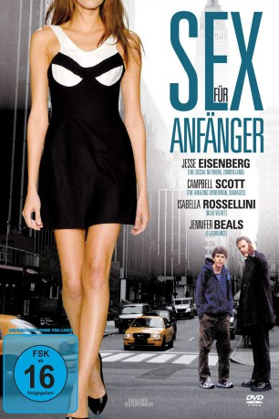

gesehen am 22.03.2015
gesehen am 22.03.2015Alternativ: Roger Dodger gesehen am 22.03.2015
 
 IMDB-Wertung: 7.0 / 10
IMDB-Wertung: 7.0 / 10  Metascore:
Metascore: 
Der lässige New Yorker Yuppie und Frauenheld Roger stürzt in eine Sinnkrise, als er eines Tages völlig überraschend von seiner Geliebten Joyce verlassen wird. Um sein angeknackstes Selbstbewusstsein aufzupolieren, nutzt der selbst ernannte Großstadt-Casanova den Besuch seines 16-jährigen Neffen Nick, um diesen großspurig in die "Geheimnisse" der "Frauenjagd" einzuweihen. Doch bei ihrer Tour durch das New Yorker Nachtleben muss Roger schon bald erkennen, dass sein "kleiner" Neffe bei weitem nicht so harmlos ist, wie er aussieht ...
Jahr: 2002
Dauer: 106 Minuten
FSK: 16
Land: USA Studio: Kulturföreningen KedjanTonspuren:
Untertitel:
Auflösung: 720p (1280x720) Größe: 3870 MB
Regisseur: Dylan Kidd
Drehbuch: Dylan Kidd
Soundtrack: Craig Wedren
Darsteller:
 Campbell Scott als Roger Swanson
Campbell Scott als Roger Swanson Jesse Eisenberg als Nick
Jesse Eisenberg als Nick Isabella Rossellini als Joyce
Isabella Rossellini als Joyce Elizabeth Berkley als Andrea
Elizabeth Berkley als Andrea Jennifer Beals als Sophie
Jennifer Beals als Sophie Ben Shenkman als Donovan
Ben Shenkman als Donovan Morena Baccarin als Girl in Bar
Morena Baccarin als Girl in Bar Colin Fickes als Angus
Colin Fickes als Angus Peter Appel als Alert Doorman
Peter Appel als Alert Doorman Ato Essandoh als Bouncer
Ato Essandoh als Bouncer Lisa Emery als Woman in Bar
Lisa Emery als Woman in BarDatei: X:\2002\Sex für Anfänger (2002, FSK16, 1280x720).mkv seit 18.03.2015
Festplatte: HD 1996-2002
 Es gibt insgesamt 93 Filme in der Gruppe '2002'
Es gibt insgesamt 93 Filme in der Gruppe '2002'